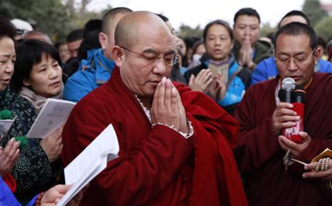

加倍咒：（三遍）
嗡 桑巴ra，桑巴ra，波玛纳，萨ra玛哈，臧巴巴，吽帕的所哈
把所放之众生置于一处，大众一起念诵：
顶礼根本上师莲足！
一、皈依、发心（三遍）： 诸佛
从今直至菩提永皈依。
我以所修施等诸资粮，
为利有情故愿大觉成。
二、发四无量心（一遍）：愿诸众生永具安乐及安乐因；
愿诸众生永离众苦及众苦因；
愿诸众生永具无苦之乐、我心怡悦；
愿诸众生远离贪嗔之心、住平等舍。
三、供养偈（一遍）并观想将此众生供养诸佛诸佛菩萨垂念我，乃至究竟菩提果，
此等众生作供养，祈以悲愍而纳受。
四、 观
顶礼、供养、皈依出有坏善逝应供正等觉，本师
顶礼、供养、皈依出有坏善逝应供正等觉，善名称吉祥王如来
顶礼、供养、皈依出有坏善逝应供正等觉，宝月智严光音自在王如来
顶礼、供养、皈依出有坏善逝应供正等觉，金色宝光妙行成就如来
顶礼、供养、皈依出有坏善逝应供正等觉，无忧最胜吉祥如来
顶礼、供养、皈依出有坏善逝应供正等觉，法海雷音如来
顶礼、供养、皈依出有坏善逝应供正等觉，法海胜慧游戏
顶礼、供养、皈依出有坏善逝应供正等觉，药师琉璃光如来
顶礼、供养、皈依出有坏善逝应供正等觉，西方
顶礼、供养、皈依出有坏善逝应供正等觉，宝髻佛
顶礼、供养、皈依
顶礼、供养、皈依
顶礼、供养、皈依
顶礼、供养、皈依
顶礼、供养、皈依 除盖障菩萨
顶礼、供养、皈依 金刚手菩萨
顶礼、供养、皈依
顶礼、供养、皈依
顶礼、供养、皈依 十方三世一切佛，一切菩萨摩诃萨
六、诵咒： 释迦牟尼
嗡牟尼牟尼玛哈牟尼耶索哈 （十遍）
金刚萨埵咒：
嗡班匝儿萨埵吽 （十遍）
观世音菩萨咒：
嗡嘛呢叭美吽舍 （十遍）
阿弥陀佛咒：
嗡阿弥德瓦阿依斯德吽舍（十遍）
不动佛咒：（三遍）
那莫那札雅雅 嗡刚嘎讷刚嘎讷 若匝讷若匝讷 卓札讷卓札讷 札萨讷札萨讷 札德哈那札德哈那 萨瓦嘎玛巴让m巴 讷美 萨瓦萨埵难匝索哈
长寿佛咒：（三遍）
嗡，那摩巴嘎瓦得 ，阿坝热么大， 阿耶加那， 色波那 ，则大得昨 杂呀， 达它嘎达亚 ，阿哈得 萨亚桑波达亚 ，达亚它 嗡 本耶本耶 ，吗哈本耶 阿坝热 ，么达本耶 ，阿坝热 么大本耶，加那桑吧 若巴子得， 嗡 萨瓦桑嘎 巴热西达， 达玛得 嘎嘎那萨梦嘎得 桑巴瓦 波西得 ，吗哈那亚 巴热瓦锐索哈
南无阿弥多婆夜，哆他伽多夜， 哆地夜他，阿弥利都婆毗， 阿弥利哆悉耽婆毗 ，阿弥利哆毗迦兰帝 ，阿弥利哆毗迦兰多 ，伽弥腻 伽伽那 枳多迦利娑婆诃
缘起咒：（三遍）
嗡耶达日玛黑德抓巴瓦，黑敦得堪达塔嘎多哈雅巴达， 得堪匝友呢若达 ，诶旺巴德玛哈夏日玛纳耶索哈
偈颂（三遍）：
诸法从缘起，如来说是因，
彼法因缘尽，是大
诸恶莫作，诸善奉行，
自净其意，是诸
此福愿获遍知果，摧毁一切过患敌，
救度众生皆摆脱，生老病死三有海。
时间不够用以下简单回向，充足最好用完整
文殊师利勇猛智，普贤慧行亦复然，
我今回向诸善根，随彼一切常修学。
三世诸佛所称叹，如是最胜诸大愿，
我今回向诸善根，为得普贤
普贤行愿品：
所有十方世界中，三世一切人师子，
我以清净身语意，一切遍礼尽无余。
普贤行愿威神力，普现一切如来前，
一身复现刹尘身，一一遍礼刹尘佛。
于一尘中尘数佛，各处菩萨众会中，
无尽法界尘亦然，深信诸佛皆充满。
各以一切音声海，普出无尽妙言辞，
尽于未来一切劫，赞佛甚深功德海。
以诸最胜妙华鬘，伎乐涂香及伞盖，
如是最胜庄严具，我以供养诸如来。
最胜衣服最胜香，末香
一一皆如妙高聚，我悉供养诸如来。
我以广大胜解心，深信一切三世佛，
悉以普贤行愿力，普遍供养诸如来。
我昔所造诸恶业，皆由无始贪嗔痴，
从身语意之所生，一切我今皆忏悔。
十方一切诸众生，二乘有学及无学，
一切如来与菩萨，所有功德皆
十方所有
我今一切皆劝请，转于无上妙法轮。
诸佛若欲示涅槃，我悉至诚而劝请，
唯愿久住刹尘劫，利乐一切诸众生。
所有礼赞供养福，请佛住世转法轮，
随喜忏悔诸善根，回向众生及佛道。
我随一切如来学，修习普贤
供养过去诸如来，及与现在十方佛。
未来一切
我愿普随三世学，速得成就大菩提。
所有十方一切刹，广大清净妙庄严，
众会围绕诸如来，悉在菩提树王下。
十方所有诸众生，愿离忧患常安乐，
获得甚深正法利，灭除烦恼尽无余。
我为菩提
常得
天龙夜叉鸠槃荼，乃至人与非人等，
所有一切众生语，悉以诸音而
勤修清净波罗密，恒不忘失菩提心，
灭除障垢无有余，一切妙行皆成就。
于诸惑业及魔境，世间道中得
犹如莲华不着水，亦如日月不住空。
悉除一切恶道苦，等与一切群生乐，
如是经于刹尘劫，十方利益恒无尽。
我常随顺诸众生，尽于未来一切劫，
恒修普贤广大行，圆满无上大菩提。
所有与我同
身口意业皆同等，一切行愿同修学。
所有益我善知识，为我显示普贤行，
常愿与我同集会，于我常生
愿常面见诸如来，及诸佛子众围绕，
于彼皆兴广大供，尽未来劫无疲厌。
愿持诸佛微妙法，光显一切菩提行，
究竟清净普贤道，尽未来劫常修习。
我于一切诸有中，所修福智恒无尽，
定慧方便及解脱，获诸无尽功德藏。
一尘中有尘数刹，一一刹有难思佛，
一一佛处众会中，我见恒演菩提行。
普尽十方诸刹海，一一毛端三世海，
佛海及与国土海，我遍修行经劫海。
一切如来语清净，一言具众音声海，
随诸众生意乐音，一一流佛辩才海。
三世一切诸如来，于彼无尽语言海，
恒转理趣妙法轮，我深智力普能入。
我能深入于未来，尽一切劫为一念，
三世所有一切劫，为一念际我皆入。
我于一念见三世，所有一切人师子，
亦常入佛境界中，如幻解脱及威力。
于一毛端极微中，出现三世庄严刹，
十方尘刹诸毛端，我皆深入而严净。
所有未来照世灯，成道转法悟群有，
究竟佛事示涅槃，我皆往诣而亲近。
速疾周遍神通力，普门遍入大乘力，
遍净庄严胜福力，无著无依智慧力，
定慧方便威神力，普能积集菩提力，
清净一切善业力，摧灭一切烦恼力，
降服一切诸魔力，圆满普贤诸行力。
普能严净诸刹海，解脱一切众生海，
善能分别诸法海，能甚深入智慧海，
普能清净诸行海，圆满一切诸愿海，
亲近供养诸佛海，修行无倦经劫海。
三世一切诸如来，最胜菩提诸行愿，
我皆供养圆满修，以普贤行悟菩提。
一切如来有长子，彼名号曰普贤尊，
我今回向诸善根，愿诸智行悉同彼。
愿身口意恒清净，诸行刹土亦复然，
如是智慧号普贤，愿我与彼皆同等。
我为遍净普贤行，文殊师利诸大愿，
满彼事业尽无余，未来际劫恒无倦。
我所修行无有量，获得无量诸功德，
安住无量诸行中，了达一切神通力。
文殊师利勇猛智，普贤慧行亦复然，
我今回向诸善根，随彼一切常修学。
三世诸佛所称叹，如是最胜诸大愿，
我今回向诸善根，为得普贤殊胜行。
愿我临欲命终时，尽除一切诸障碍，
面见彼佛阿弥陀，即得往生安乐刹。
我既往生彼国已，现前成就此大愿，
一切圆满尽无余，利乐一切众生界。
彼佛众会咸清净，我时于胜莲华生，
亲睹如来无量光，现前授我菩提记。
蒙彼如来授记已，
智力广大遍十方，普利一切众生界。
乃至
如是一切无尽时，我愿究竟恒无尽。
十方所有无边刹，庄严众宝供如来，
最胜安乐施天人，经一切刹微尘劫。
若人于此胜愿王，一经于耳能生信，
求胜菩提心渴仰，获胜功德过于彼。
即常远离恶知识，永离一切诸恶道，
速见如来无量光，具此普贤最胜愿。
此人善得胜
此人不久当成就，如彼普贤菩萨行。
往昔由无智慧力，所造极恶五无间，
诵此普贤大愿王，一念速疾皆消灭。
族姓种类及容色，相好智慧咸圆满，
诸魔外道不能摧，堪为
速诣菩提大树王，坐已降服诸魔众，
成等正觉转法轮，普利一切诸含识。
若人于此普贤愿，读诵受持及演说，
果报唯佛能证知，决定获胜菩提道。
若人诵此普贤愿，我说少分之善根，
一念一切悉皆圆，成就众生清净愿。
我此普贤殊胜行，无边胜福皆回向，
普愿沉溺诸众生，速往无量光佛刹。
以佛所获三身之加持
法性不变
僧众不退意乐之加持
如是回向发愿悉成就
成就所愿咒
达雅塔，班赞哲雅阿瓦波达呢耶所哈。
嗡啊吽 班匝格热巴玛色德吽（三遍）
（完）
注意事项： ① 时间：
② 地点：宜在放生池，以及远离捕杀之水域、山林等，尽量使所放众生生存悦意且能长寿之地。
③ 类别：虫类、鱼类、飞禽、畜类等，所放众生之躯体越大，则所获之功德也越大。
④ 方式：在念诵
⑤ 发心：应发利益众生之清净心，一心一意为其获得暂时之安乐及究竟之解脱而祈祷。
本来各种放生仪轨颇多，且各不相同。比如，汉地有些地方为其念香赞、水文、
以此善根，回向无边众生，并愿诸高僧大德长久住世，常转法轮！
丁丑年四月索达吉
作于五明佛学院南方摩尼宝洲